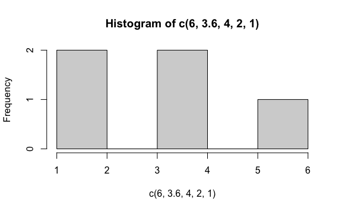
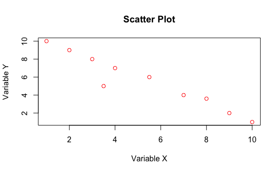
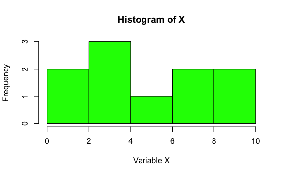
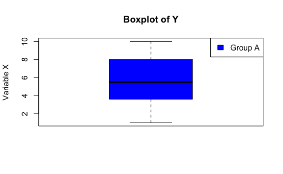

Chapter 4 Advanced Techniques
4.1 Metaprogramming: writing code that writes code
In previous chapters, we explored different object types in R and how to use functions to manipulate them. Now, we are going to delve into a more advanced concept: metaprogramming.
Metaprogramming is a technique that allows us to write code that generates other code. It’s like having a code factory where we can create new functions and expressions dynamically.
Why is this useful? Metaprogramming can be very useful for:
- Automating repetitive tasks: If we have to write similar code many times, we can use metaprogramming to generate that code automatically.
- Creating more flexible functions: We can use metaprogramming to create functions that adapt to different situations and data types.
- Writing more concise and expressive code: Metaprogramming allows us to express complex ideas more concisely.
In R, metaprogramming is based on the manipulation of expressions. An expression is a representation of R code as an object. We can create expressions, modify them, and evaluate them to generate new code.
4.1.1 Manipulating expressions: The art of sculpting code
In R, metaprogramming relies on manipulating expressions. An expression is a representation of R code as an object. Instead of simply executing the code, we can manipulate it as if it were a block of clay, shaping and modifying it to create new expressions and functions.
Think of an expression like a cooking recipe. The recipe contains a set of instructions (ingredients and steps to follow) to create a dish. Similarly, an expression in R contains instructions to perform a task.
R offers us several tools to manipulate expressions, as if they were the hands of a sculptor shaping clay:
quote(): This function takes R code and “freezes” it into an expression, without evaluating it. It’s like taking the cooking recipe and saving it in a book, without preparing it yet.In this example,
quote(x + y)creates an expression representing the sum ofxandy. The expression is stored in the variablemy_expression, but the sum is not performed yet.substitute(): This function allows us to substitute variables in an expression with their values. It’s like in the cooking recipe, replacing the word “sugar” with the amount of sugar we want to use.In this example,
substitute(x + y)replaces variablesxandywith their values (10 and 5, respectively), resulting in the expression10 + 5.eval(): This function “unfreezes” an expression and evaluates it, executing the code it contains. It’s like taking the cooking recipe from the book and using it to prepare the dish.In this example,
eval(quote(x + y))evaluates the expressionx + y, performing the sum and returning the result 15.parse(): This function converts text into an expression. It’s like someone dictating the cooking recipe to us, and we write it down on paper to use later.In this example,
parse(text = text)converts the text"x * y"into an expression representing the multiplication ofxandy.
With these tools, we can manipulate expressions to create new functions, modify the behavior of existing functions, and generate code dynamically.
4.1.2 Examples
Metaprogramming might seem like an abstract concept at first, but its applications are very concrete and powerful. Let’s look at some examples of how we can use metaprogramming in R to create dynamic functions and generate code automatically.
Example 1: Creating a function that generates other functions
Imagine you need to create several functions performing similar operations, but with some different parameters. For example, functions adding different constants to a number. Instead of writing each function separately, you can use metaprogramming to create a function that generates these functions dynamically.
create_sum_function <- function(n) {
expression <- substitute(function(x) x + n)
eval(expression)
}
sum_5 <- create_sum_function(5)
sum_10 <- create_sum_function(10)
sum_5(10)
#> [1] 15
sum_10(10)
#> [1] 20In this example, the create_sum_function() function receives a number n as an argument and generates a new function adding n to its argument. The substitute() function is used to create an expression representing the function we want to generate, and the eval() function is used to evaluate the expression and create the function.
Example 2: Generating code for data analysis
Suppose you want to perform a data analysis involving several steps, such as filtering data, calculating statistics, and generating a plot. You can use metaprogramming to generate the code for this analysis dynamically, based on specified parameters.
analyze_data <- function(data, filter_cond, column_to_analyze, statistic, plot_type) {
# Filter data
filtered_data <- substitute(data[filter_cond, ][[column_to_analyze]])
filtered_data <- eval(filtered_data)
# Calculate statistic
calculated_statistic <- substitute(statistic(filtered_data))
calculated_statistic <- eval(calculated_statistic)
# Generate plot
plot_expression <- substitute(plot_type(filtered_data))
eval(plot_expression)
# Return calculated statistic
return(calculated_statistic)
}
# Usage example
df <- data.frame(
x = c(1, 3, 2, 5.5, 4, 3.5, 8, 7, 9, 10),
y = c(10, 8, 9, 6, 7, 5, 3.6, 4, 2, 1)
)
# We want to filter data where x > 5, calculate mean of y and generate a histogram
result <- analyze_data(df, df$x > 5, "y", mean, hist)
result
#> [1] 3.32
Example 3: Creating a function to generate plots with dynamic variable names and advanced options
Imagine you need to create a function generating different types of plots (scatter, histograms, boxplots) with custom options like titles, labels, colors, and legends, and that can also handle different datasets and variables. In this case, metaprogramming can be very useful to create a flexible function adapting to these needs.
create_plot <- function(data, plot_type, var_x, var_y = NULL,
title = NULL, color = "blue",
labels_x = NULL, labels_y = NULL,
legend = NULL) {
# Create base plot expression
if (plot_type == "scatter") {
expression <- substitute(plot(data[[var_x]], data[[var_y]],
xlab = labels_x, ylab = labels_y,
main = title, col = color))
} else if (plot_type == "histogram") {
expression <- substitute(hist(data[[var_x]], main = title, xlab = labels_x, col = color))
} else if (plot_type == "boxplot") {
expression <- substitute(boxplot(data[[var_x]], main = title, ylab = labels_y, col = color))
} else {
stop("Invalid plot type.")
}
# Evaluate base expression
eval(expression)
# Add legend if specified
if (!is.null(legend)) {
legend("topright", legend = legend, fill = color)
}
}
# Usage example
df <- data.frame(
x = c(1, 3, 2, 5.5, 4, 3.5, 8, 7, 9, 10),
y = c(10, 8, 9, 6, 7, 5, 3.6, 4, 2, 1)
)
create_plot(df, "scatter", "x", "y",
title = "Scatter Plot", color = "red",
labels_x = "Variable X", labels_y = "Variable Y")
create_plot(df, "histogram", "x",
title = "Histogram of X", color = "green",
labels_x = "Variable X")
create_plot(df, "boxplot", "y",
title = "Boxplot of Y", color = "blue",
labels_y = "Variable X",
legend = c("Group A"))
In this example, the create_plot() function can generate different types of plots with custom options. The function uses substitute() to construct the base plot expression, and then eval() to evaluate the expression and generate the plot. Additionally, the function can add a legend to the plot if the legend argument is specified.
This example illustrates how metaprogramming can be useful for creating more flexible and complex functions that adapt to different needs.
4.2 Functional programming: a new paradigm
In previous chapters, we explored different object types in R and how to use functions to manipulate them. We have also seen how metaprogramming allows us to write code that generates other code. Now, we are going to delve into a different programming paradigm: functional programming.
Functional programming is a programming style based on the use of pure functions and data immutability.
- A pure function is a function that always produces the same result for the same arguments, and has no side effects (i.e., it does not modify any data outside the function).
- Data immutability means data is not modified after being created. Instead of modifying existing data, new data is created with modifications.
These principles make functional programming easier to reason about, debug, and maintain. It also facilitates writing concurrent and parallel code, as pure functions have no side effects that can interfere with other processes.
4.2.1 Basic principles of functional programming
- Functions as first-class citizens: In functional programming, functions are treated like any other data type. They can be passed as arguments to other functions, returned as results from functions, and stored in variables.
- Pure functions: Pure functions always produce the same result for the same arguments, and have no side effects. This makes code more predictable and easier to debug.
- Immutability: Data is not modified after being created. Instead of modifying existing data, new data is created with modifications. This avoids errors caused by accidental data modification.
- Rejection of loops: Functional programming avoids using
forandwhileloops. Instead, higher-order functions likemap,reduce, andkeepare used to process data collections.
4.2.2 Higher-order functions in R
R offers several higher-order functions that are especially useful for functional programming. These functions allow us to manipulate vectors, lists, and other objects concisely and efficiently, avoiding the use of for and while loops. The purrr package offers variants of map() for different types of results: map_dbl() to get a numeric vector, map_chr() to get a character vector, map_lgl() to get a logical vector, etc.
map(): Applies a function to each element of a vector or list, and returns a new vector or list with the results. It’s like having a machine taking each element of our data collection, processing it with the function we indicate, and placing the result in a new collection.library(purrr) # Create a vector of numbers numbers <- c(1, 2, 3, 4, 5) # Calculate square of each number using an anonymous function squares <- map(numbers, function(x) x^2) # Show result squares #> [[1]] #> [1] 1 #> #> [[2]] #> [1] 4 #> #> [[3]] #> [1] 9 #> #> [[4]] #> [1] 16 #> #> [[5]] #> [1] 25 # We can also use a predefined function square_roots <- map(numbers, sqrt) # Show result square_roots #> [[1]] #> [1] 1 #> #> [[2]] #> [1] 1.414214 #> #> [[3]] #> [1] 1.732051 #> #> [[4]] #> [1] 2 #> #> [[5]] #> [1] 2.236068reduce(): Combines elements of a vector or list applying a function cumulatively. It’s like having a machine taking two elements of our collection, combining them using the function we indicate, and then combining the result with the next element, and so on until all elements are combined.keep(): Filters elements of a vector or list meeting a condition. It’s like having a sieve letting pass only elements meeting the condition we indicate.
The ~ symbol in higher-order functions is used to define an anonymous function. This means you are creating a function “on the fly”, without needing to give it an explicit name. The part following ~ is the body of this function, specifying operations to be performed on each element of the vector or list to which the function is applied. The dot . is used as a placeholder to refer to the current element.
These functions, along with other higher-order functions like map2(), pmap(), accumulate(), and every(), give us great flexibility for processing data functionally in R.
4.2.3 Examples
Let’s see some examples of how to apply functional programming in R:
Calculate the sum of squares of even numbers in a vector:
Filter cities with a population greater than 5 million:
cities <- list( list(name = "New York", population = 8.4e6), list(name = "Los Angeles", population = 3.9e6), list(name = "Chicago", population = 2.7e6) ) big_cities <- cities |> keep(~.x$population > 5e6) big_cities #> [[1]] #> [[1]]$name #> [1] "New York" #> #> [[1]]$population #> [1] 8400000In this example, “x” acts as a placeholder to represent each element of the
citieslist as it iterates over it. That is, in each iteration, “x” will take the value of one of the cities in the list.Why is “x” used?
- Anonymous function: The expression
~ .x$population > 5e6defines an anonymous function. This function takes an element of the list as input and returns a logical value (TRUE or FALSE) depending on whether that city’s population is greater than 5 million. - Access to elements: The
$symbol is used to access elements of a list. In this case,.x$populationaccesses the “population” element of the current list element (represented by “x”). - Conciseness: Using “x” makes the code more concise and readable, avoiding the need to define a named function explicitly for this operation.
You can use any name you want instead of “x”, as long as it is consistent within the anonymous function.
- Anonymous function: The expression
Functional programming is a powerful paradigm that can help you write cleaner, more efficient, and maintainable code. As you become familiar with its principles and tools, you will be able to apply them to a wide variety of data analysis problems.
4.3 R6: The future of OOP in R
In R, Object-Oriented Programming (OOP) can be implemented in several ways. Traditionally, R has used systems called S3 and S4 for OOP.
S3 is an informal and flexible system. It is based on the idea of generic functions, which can have different methods depending on the class of the object they apply to. For example, the print() function is a generic function having different methods for printing different types of objects, such as vectors, lists, or data frames.
# Example of generic function in S3
print(c(1, 2, 3)) # Prints a numeric vector
#> [1] 1 2 3
print(list(a = 1, b = 2)) # Prints a list
#> $a
#> [1] 1
#>
#> $b
#> [1] 2S4 is a more formal and structured system than S3. It defines classes and methods more explicitly, using special syntax. S4 is often used in packages requiring a more rigorous object structure, like Bioconductor.
# Example of class definition in S4
setClass("Person", slots = c(name = "character", age = "numeric"))
# Example of object creation in S4
my_person <- new("Person", name = "John", age = 30)
my_person
#> An object of class "Person"
#> Slot "name":
#> [1] "John"
#>
#> Slot "age":
#> [1] 30However, both S3 and S4 can be somewhat confusing and limited, especially for more complex projects. Luckily, there is a more modern and robust alternative: the R6 package. This package offers a more intuitive and efficient way to implement OOP in R, with features facilitating code organization, reuse, and maintenance. If you are new to OOP, don’t worry about S3 and S4 details for now. With R6, you can learn basic OOP concepts more easily and apply them to your data analysis projects.
4.3.1 The R6 package: Classes, methods, encapsulation, and inheritance
The R6 package implements a class and object system similar to other object-oriented programming languages like Python or Java. It provides a robust and efficient way to create objects with attributes and methods, allowing encapsulation and inheritance.
Classes:
A class is like a blueprint or template for creating objects. It defines the attributes (data) and methods (functions) that objects of that class will have. In R6, classes are created with the R6Class() function.
# Define a "Person" class
Person <- R6Class("Person",
public = list(
name = NULL,
age = NULL,
# Constructor
initialize = function(name, age) {
self$name <- name
self$age <- age
},
# Method to greet
greet = function() {
cat("Hello, my name is", self$name, "and I am", self$age, "years old.\n")
}
)
)In this example, a Person class is defined with name and age attributes, and greet() method. The public list defines public members of the class, i.e., attributes and methods accessible from outside the object.
Objects:
An object is an instance of a class. It is a concrete entity having attributes and methods defined by the class. In R6, objects are created with the $new() method.
# Create an object of class "Person"
juan <- Person$new(name = "Juan", age = 30)
juan
#> <Person>
#> Public:
#> age: 30
#> clone: function (deep = FALSE)
#> greet: function ()
#> initialize: function (name, age)
#> name: JuanMethods:
Methods are functions operating on an object’s attributes. They allow accessing and modifying object data, as well as performing other actions. In R6, methods are defined within the public list of the class.
# Call greet() method of object "juan"
juan$greet()
#> Hello, my name is Juan and I am 30 years old.Encapsulation:
Encapsulation is a mechanism allowing hiding internal details of an object and controlling access to its attributes. This protects object data and facilitates usage. In R6, encapsulation is achieved by distinguishing between public and private members.
Public members are defined in public list and can be accessed from outside the object. Private members are defined in private list and can only be accessed from within the object, through methods.
# Define a "BankAccount" class with encapsulation
BankAccount <- R6Class("BankAccount",
public = list(
holder = NULL,
# Constructor
initialize = function(holder) {
self$holder <- holder
private$balance <- 0
},
# Method to deposit money
deposit = function(amount) {
private$balance <- private$balance + amount
},
# Method to withdraw money
withdraw = function(amount) {
if (amount <= private$balance) {
private$balance <- private$balance - amount
} else {
stop("Insufficient funds.")
}
},
# Method to check balance
check_balance = function() {
return(private$balance)
}
),
private = list(
balance = NULL
)
)Inheritance:
Inheritance is a mechanism allowing creating new classes from existing classes, inheriting their attributes and methods. This facilitates code reuse and creation of class hierarchies. In R6, inheritance is specified with inherit argument of R6Class() function.
# Define a "Student" class inheriting from "Person"
Student <- R6Class("Student",
inherit = Person,
public = list(
major = NULL,
# Constructor
initialize = function(name, age, major) {
super$initialize(name, age)
self$major <- major
},
# Method to show student info
show_info = function() {
super$greet()
cat("Major:", self$major, "\n")
}
)
)
# Create an object of class "Student"
maria <- Student$new(name = "Maria", age = 20, major = "Engineering")
# Call method show_info()
maria$show_info()
#> Hello, my name is Maria and I am 20 years old.
#> Major: EngineeringIn this example, Student class inherits from Person class. Student constructor calls parent class constructor (super$initialize()) to initialize inherited attributes. show_info() method calls parent class greet() method (super$greet()) and then shows student-specific information.
With R6, you can create classes and objects with a high degree of flexibility and control, allowing you to apply OOP effectively in your data analysis projects.
4.4 Exercises
Below, you will find a series of exercises with different levels of difficulty. It is time to put into practice what you have learned in this chapter.
- Create an expression representing the sum of two variables
aandb.
- Create an expression representing the multiplication of two variables
xandy, and then evaluate it.
- Create a vector of numbers and use
map()function to calculate the square of each number.
Solution
- Create a vector of numbers and use
filter()function to get only even numbers.
- Create a function called
create_power_function()receiving a numbernas argument and returning a function raising its argument to powern.
- Create a vector of numbers and use
reduce()function to calculate the product of all numbers.
- Create a class called
Petwith attributesname,speciesandage, and methodsintroduce()(showing name, species and age of pet) andhave_birthday()(incrementing pet age by 1).
Solution
library(R6)
Pet <- R6Class("Pet",
public = list(
name = NULL,
species = NULL,
age = NULL,
initialize = function(name, species, age) {
self$name <- name
self$species <- species
self$age <- age
},
introduce = function() {
cat("Hello, I am", self$name, ", a", self$species, "of", self$age, "years old.\n")
},
have_birthday = function() {
self$age <- self$age + 1
}
)
)- Create a function called
create_flexible_sum_function()receiving a numbernas argument and returning a function addingnto the sum of all arguments passed to it.
Solution
- Create a function called
create_dynamic_plot()receiving a data frame, a plot type (“scatter”, “histogram” or “boxplot”), and a list of options for the plot (like title, color, labels, etc.). The function should generate the specified plot with given options.
Solution
create_dynamic_plot <- function(data, plot_type, options) {
# Create base plot expression
if (plot_type == "scatter") {
expression <- quote(plot(data[[options$var_x]], data[[options$var_y]],
xlab = options$labels_x, ylab = options$labels_y,
main = options$title, col = options$color))
} else if (plot_type == "histogram") {
expression <- quote(hist(data[[options$var_x]],
main = options$title,
xlab = options$labels_x, col = options$color))
} else if (plot_type == "boxplot") {
expression <- quote(boxplot(data[[options$var_x]],
main = options$title,
ylab = options$labels_y, col = options$color))
} else {
stop("Invalid plot type.")
}
# Evaluate base expression
eval(expression)
}
# Create sample data
data <- data.frame(x = rnorm(100), y = rnorm(100))
# Tests
# Scatter plot
options_scatter <- list(var_x = "x", var_y = "y",
title = "Scatter Plot",
labels_x = "Variable X",
labels_y = "Variable Y",
color = "blue")
create_dynamic_plot(data, "scatter", options_scatter)
# Histogram
options_histogram <- list(var_x = "x",
title = "Histogram",
labels_x = "Values",
color = "green")
create_dynamic_plot(data, "histogram", options_histogram)
# Boxplot
options_boxplot <- list(var_x = "y",
title = "Boxplot",
labels_y = "Values",
color = "red")
create_dynamic_plot(data, "boxplot", options_boxplot)- Create a class called
Doginheriting fromPetclass (from previous exercises).Dogclass should have an additional attribute calledbreedand a method calledbark().